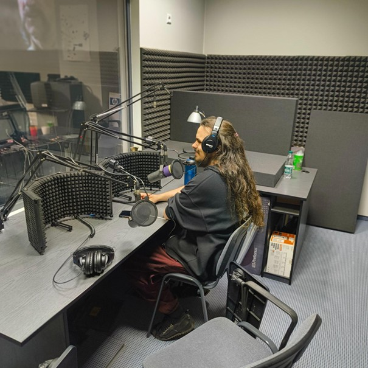

Zanim zapaliła się lampka ON AIR
Początki naszej radiowej historii sięgają 2002 roku, kiedy pod opieką redaktora Roberta Gawłowskiego powstał internetowy magazyn Zwrotnica. Kilka lat później idea projektu ewoluowała. Członkowie Zwrotnicy stworzyli Uniradio – projekt radiowy, który zmieniał się wraz z duchem czasu i podążał za nowymi trendami medialnymi. W tej formie działał prężnie aż do wybuchu pandemii COVID-19 w 2020 roku.
Gdy świat zaczął wracać do normalności, inicjatywa również odżyła, choć w nieco zmienionej formie. Uniradio stało się przestrzenią do rozwijania umiejętności dziennikarskich, np. pisania tekstów, czy obsługi konsoli, w przystępny i twórczy sposób.
Na antenie: studenci
Od 2023 roku, średnio trzy razy w tygodniu, studenci Dziennikarstwa i Komunikacji Społecznej (i nie tylko!) spotykają się, aby organizować dzień radiowy złożony z ich autorskich audycji. Zajmują się także realizacją dźwięku i promocją w social mediach. Obecnie projektem opiekuje się dr Łukasz Śmigiel, a wsparcie techniczne zapewnia dr Jakub Wilk.
Już teraz działamy prężnie – nie zmienia to jednak faktu, że wciąż chcemy się rozwijać. A miejsce na nowe pomysły jest zawsze. Jako inicjatywie studenckiej zależy nam na stworzeniu przestrzeni, w której ludzie tacy jak Ty, drogi czytelniku, mogą rozwijać swoje zainteresowania.

Tę ciszę trzeba zapełnić
Obecna ramówka składa się głównie z audycji autorskich i programów publicystycznych. Radio to jednak coś więcej niż tylko publicystyka. To także newsy, programy popularnonaukowe, reportaże, wywiady czy wstawki. Chcemy właśnie na nie zrobić miejsce – i tu właśnie pojawiasz się Ty. Jeśli masz trochę zapału, pomysł na siebie w przestrzeni radiowej, czy też po prostu chcesz się sprawdzić – wpadnij do nas!
Kontakt
Najlepiej kontaktować się z nami mailowo: projektuniradio@gmail.com lub przez profil na Instagramie: uniradio.projekt.
Zapraszamy! Cisza nie trwa wiecznie, a gra słowem to nasza specjalność!
Tekst: Dawid Gruszka, red. Zuzanna Biernacka
Zdjęcia: Dawid Gruszka